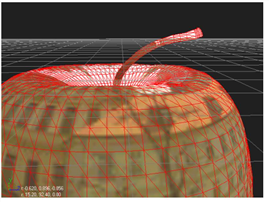

您可以导入到 Nuke 从其他软件程序中保存的场景 3D 对象 。Obj (波前) 格式。你不能操纵 。Obj 从内部到顶点级别的对象 Nuke ,但是你可以对它们进行纹理和变换。
|
 |
| 导入的 OBJ 对象。 |
| 1。 | 单击 3D > 几何 > ReadGeo 插入 ReadGeo 节点。 |
| 2. | 在 ReadGeo 参数中，单击 文件 字段的文件夹图标。将出现文件导航对话框。 |
| 3. | 导航到 OBJ 文件，然后单击 打开 . Nuke 读取 OBJ 文件。 |
| 4. | 拖动 ReadGeo 节点的 Img 管道到包含要用作纹理的剪辑的读取节点。 |
| 5. | 将场景节点的一个编号管道拖动到 ReadGeo 节点，以在场景中放置 OBJ 对象。 |
|
|